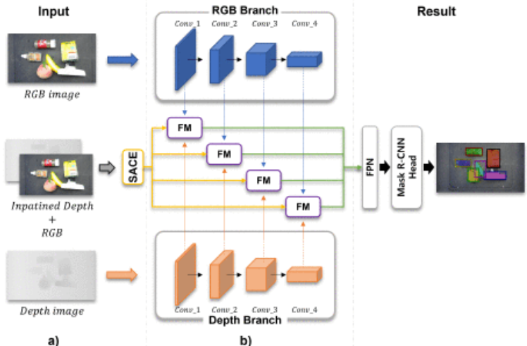
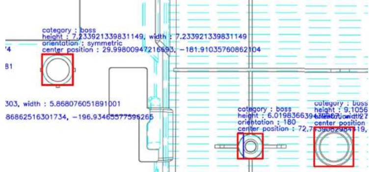
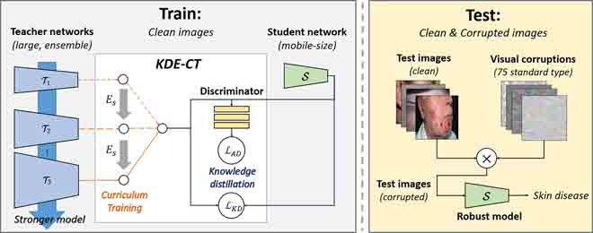
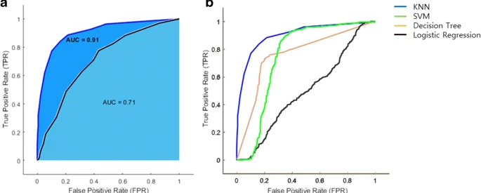
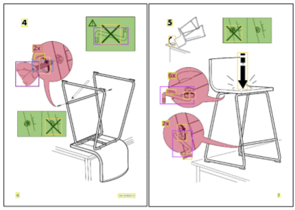

publications
publications by categories in reversed chronological order. generated by jekyll-scholar.
2022
2021
-
 ICCASFusing RGB and depth with Self-attention for Unseen Object SegmentationIn 2021 21st International Conference on Control, Automation and Systems (ICCAS) 2021
-
 ICCASAutomatic Detection of Injection and Press Mold Parts on 2D Drawing Using Deep Neural NetworkIn 2021 21st International Conference on Control, Automation and Systems (ICCAS) 2021
-
 IEEE ACCESSRobust Skin Disease Classification by Distilling Deep Neural Network Ensemble for the Mobile Diagnosis of Herpes ZosterIEEE Access 2021
-
 CHILD’NERVPilot study of a single-channel EEG seizure detection algorithm using machine learningChild’s Nervous System 2021
-
 ArXivObject Detection for Understanding Assembly Instruction Using Context-aware Data Augmentation and Cascade Mask R-CNNarXiv preprint arXiv:2101.02509 2021
-
Korean Journal
AI for furniture assembly - robotic assembly planning from assembly instructionRobot and Human (Korea Robotics Society) 2021
2020
2019
-
Korean Journal
Research trend of robotic assembly planning from assembly instructionThe Journal of The Korean Institute of Communication Sciences 2019